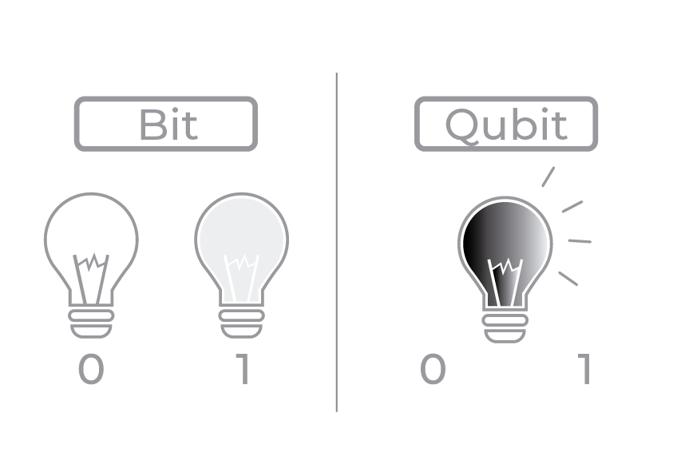

Computação Quântica
Uma nova luz.
Gabriel M. Lambert
Octavio Santana
Pedro Henrique Ronchini
O que é?

A base da computação quântica é a representação de um bit, o Qubit. E necessário um sistema quântico que apresente dois estados bem definidos, indicados por |0 > e |1 >. Apesar de possuir estes dois estados quânticos fundamentais, o sistema utilizado poderá se encontrar em um estado que é na realidade uma sobreposição dos estados fundamentais. A sobreposição é indicada por uma distribuição probabilística através dos estados fundamentais. O estado do sistema fica descrito por um vetor, cada posição do vetor está associada a um estado fundamental e o valor representado define a probabilidade do Qubit estar naquele estado fundamental. Em um sistema com n Qubits teremos 2n estados fundamentais possíveis. Ao medir o sistema obtemos um único valor que indica apenas o conjunto de estados fundamentais nos quais cada Qubit do sistema se encontra, o estado medido segue à distribuição probabilística. Este mecanismo é a base de concepção de uma máquina probabilística de Turing.
Problema Real
Considere que, para abrir uma porta, seja preciso inserir uma senha baseada em
lâmpadas acesas ou apagadas:
Computador Tradicional
Tentaria descobrir a combinação correta - mas isso teria de calcular uma possibilidade de cada vez.
Computador Quântico
Graças à superposição, seria capaz de realizar todos os cálculos ao mesmo tempo e com isso testar todas as
possibilidades simultaneamente.
Supremacia Quântica
1. Escolha um circuito
2. Execute-o em um computador quântico
3. Simule em um computador tradicional
200 segundos X 10 mil anos
QSystem One
Capacidade: 20 QuBits
IBM apresenta primeiro computador quântico pensado para uso comercial.
Durante a Consumer Electronic Show (CES), a empresa anunciou seu primeiro sistema integrado do tipo, desenhado
para uso comercial. Chamado de Q System One, o hardware de 20 qubits de capacidade foi pensado para operar como um
mainframe, fora do ambiente de laboratório.
Quaisquer mudanças eletromagnéticas ou vibrações, por menores que sejam, fazem com eles percam toda sua capacidade
quântica, como destaca da IBM. Além disso, os chips do tipo precisam ser mantidos a uma temperatura próxima do
zero absoluto para funcionar.
Por isso há toda uma proteção reforçada em torno do Q System One. Essa “jaula” ajuda a bloquear interferências e
mantém a máquina funcionamento.
O Futuro

E por que não estamos usando a computação quântica?
Obter todas essas vantagens tem um preço significativo. A Minsait aponta dois desafios fundamentais para serem
resolvidos até à adoção eficaz do computador quântico em massa: superar condições físicas e garantir
cibersegurança das informações contidas nos qubits.
Obrigado!
O Gato de Schrödinger.
A triste história de Schrödinger e seu bichinho de estimação foi criada em 1935 (2 anos após ele ganhar seu Nobel)
para explicar o Princípio da Incerteza, criado por Werner Heisenberg - um dos pilares da mecânica quântica.
-Temos uma caixa fechada e não podemos ver o que se passa lá dentro.
-Na caixa está um gato, um vidro de veneno, um martelo, 1 único átomo de um elemento radioativo qualquer e um
instrumento que detecta radiação.
-Se a radiação for detectada, o martelo é acionado, o vidro de veneno é quebrado e o gato morre; do contrário, o
gato vive e todos ficam felizes.
Explicando a teoria de Schrödinger:
-Dessa forma temos 2 possíveis cenários : Em um deles o instrumento percebe a radiação e dispara o martelo matando
o gatinho, no outro não. Segundo Schrödinger, como o átomo radioativo pode estar ou não estar em qualquer lugar ao
mesmo tempo, os dois cenários acontecem simultaneamente, estando o gato vivo e morto, pelo menos até a hora em que
você resolver abrir a caixa.